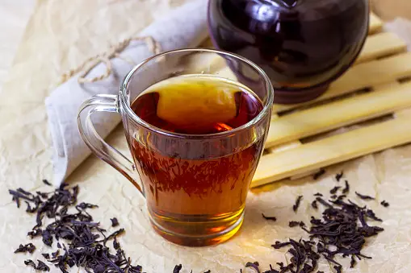

Regular-Tea
What sets Regular-Tea apart is our commitment to providing a diverse selection of flavors that cater to all tastes. Whether you're a fan of classic black tea, prefer the delicate notes of green tea, or crave the soothing herbal infusions, Regular-Tea has something for everyone. Our teas are expertly blended with natural ingredients, herbs, and spices, creating unique and harmonious flavor profiles.

Black-Tea
Black tea, a beloved classic in the world of tea, has been enjoyed for centuries and holds a special place in the hearts of tea enthusiasts worldwide. With its robust flavor, bold aroma, and rich history, Black-Tea brings a delightful experience to tea lovers everywhere.Black-Tea is known for its distinctive dark color, strong taste, and full-bodied character. It is made from the leaves of the Camellia sinensis plant, which are withered, rolled, and fully oxidized before being dried and packaged. The oxidation process gives black tea its unique flavor profile, ranging from malty and earthy to fruity and floral, depending on the specific tea variety.
Earlgrey-Tea
Earl Grey tea is a classic and iconic tea variety that has captivated tea enthusiasts for generations. Known for its distinctive aroma and elegant flavor, Earl Grey-Tea offers a delightful and refined tea experience that is sure to please your senses.Earl Grey-Tea gets its name from the British Prime Minister, Charles Grey, who reportedly received a gift of tea flavored with bergamot oil. Bergamot is a citrus fruit native to Italy, and its essence is extracted and blended with black tea leaves to create the signature flavor of Earl Grey. The result is a tea that is both fragrant and flavorful, with a unique balance of citrusy notes and the boldness of black tea.
Green-Tea
Green tea is a beloved and revered beverage that has been enjoyed for centuries, celebrated for its refreshingtaste, vibrant color, and numerous health benefits. Green-Tea brings you the essence of this ancient tradition,offering a truly invigorating and wholesome tea experience.Green-Tea is made from the leaves of the Camellia sinensis plant, just like black tea, but with one significant difference: it undergoes minimal oxidation. Theleaves are carefully picked and quickly heated or steamed to halt the oxidation process, preserving their natural green color and capturing the fresh and delicate flavors unique to green tea.Herbal-Tea
Herbal tea, also known as tisane, offers a delightful and caffeine-free alternative to traditional tea varieties. Herbal-Tea brings you a diverse and flavorful range of herbal infusions that are crafted with care to provide a soothing and aromatic tea-drinking experience.Herbal-Tea is distinct from traditional tea because it is made from a variety of herbs, flowers, fruits, and spices, rather than the leaves of the Camellia sinensis plant. This allows for a wide array of flavors and health benefits to be explored, making herbal tea a versatile and comforting choice for tea enthusiasts.